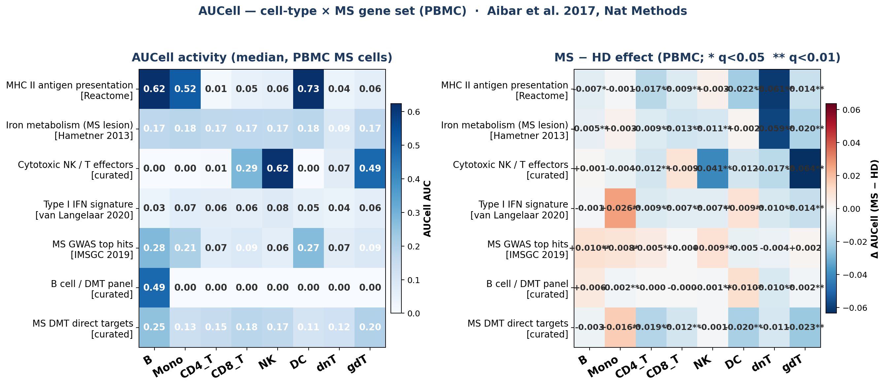
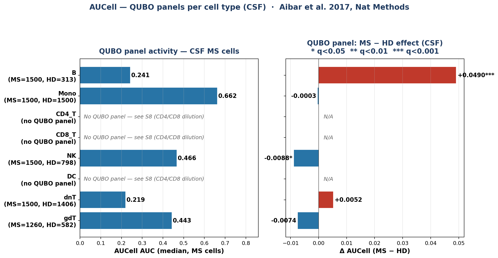
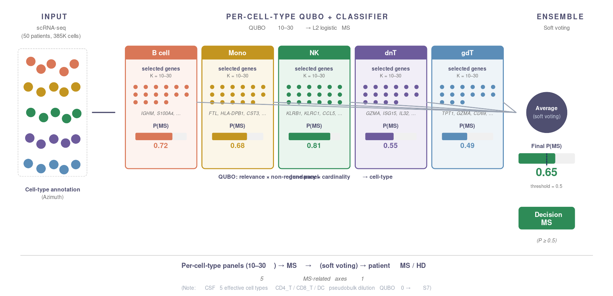
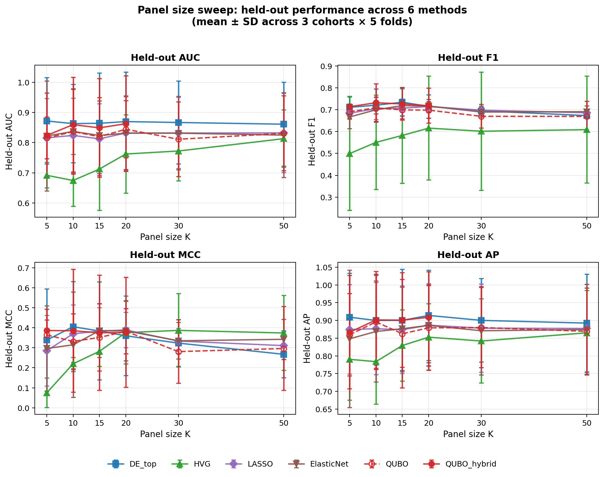

| Cohort | Group | n | Female / Male | Age (mean ± SD) | Age range | Compartment |
|---|---|---|---|---|---|---|
| ▶ Pappalardo PRJNA671484_MS_Tcell total n=11 | ||||||
| HD | 6 | 4 / 2 | 32.7 ± 5.5 | 27 – 38 | CSF + PBMC | |
| MS | 5 | 4 / 1 | 29.0 ± 8.7 | 21 – 39 | ||
| ▶ Heming osmzhlab_MS_ence_cov total n=18 | ||||||
| HD | 9 | 7 / 2 | 31.7 ± 7.5 | 20 – 45 | CSF only (longitudinal: ~2 samples/donor) | |
| MS | 9 | 5 / 4 | 38.4 ± 12.7 | 22 – 54 | ||
| ▶ Ramesh PRJNA549712_MS_PBMC_UCSF total n=17 | ||||||
| HD | 3 | 1 / 2 | 33.7 ± 7.0 | 27 – 41 | CSF + PBMC | |
| MS | 14 | 9 / 5 | 39.4 ± 9.8 | 22 – 54 | ||
| ▶ Touil PRJNA979258_cryoCSF total n=4 (HD only — fixed to training set) | ||||||
| HD | 4 | 2 / 2 | 42.0 ± 11.7 | 27 – 54 | CSF (cryopreserved) | |
| Total (combined) | 50 | 32 / 18 | 35.7 ± 9.7 | 20 – 54 | CSF (4) / PBMC (2) | |
| of which MS | 28 | — | 18 / 10 (64% F) | 37.2 ± 11.0 | 21 – 54 | 3 cohorts |
| of which HD | 22 | — | 14 / 8 (64% F) | 34.1 ± 8.3 | 20 – 54 | 4 cohorts |
EDSS scores, disease duration, prior DMT use, and MRI-derived measures were not retrievable from the public metadata of all 4 cohorts and are therefore not shown. Acquisition of these clinical variables is planned for Phase 2 in collaboration with partner sites.
| Method | Pappalardo (45% MS) | Heming (50% MS, balanced) | Ramesh (82% MS) | cohort mean | cohort σ |
|---|---|---|---|---|---|
| QUBO_hybrid Main | 0.947 ± 0.084 | 0.738 ± 0.060 ★ | 0.890 ± 0.021 | 0.858 | 0.108 |
| QUBO | 0.933 ± 0.041 | 0.694 ± 0.099 | 0.881 ± 0.112 | 0.836 | 0.126 |
| QUBO_consensus | 0.913 ± 0.069 | 0.622 ± 0.110 | 0.838 ± 0.097 | 0.791 | 0.151 |
| DE_top | 0.980 ± 0.030 ★ | 0.726 ± 0.124 | 0.914 ± 0.080 ★ | 0.873 ★ | 0.132 |
| HVG | 0.967 ± 0.033 | 0.768 ± 0.142 | 0.843 ± 0.147 | 0.859 | 0.100 ★ |
| Elastic Net | 0.933 ± 0.071 | 0.672 ± 0.030 | 0.910 ± 0.039 | 0.838 | 0.145 |
| LASSO | 0.940 ± 0.068 | 0.667 ± 0.117 | 0.786 ± 0.058 | 0.797 | 0.137 |
QUBO_hybrid achieves AUC = 0.738 on balanced Heming hold-out — #1 among label-aware methods. Pappalardo / Ramesh AUCs are inflated by class imbalance (Ramesh 82% MS). cohort σ ★ = HVG #1; QUBO_hybrid #2 (#1 among label-aware methods).
| Method | AUC | AP | F1 | MCC | σ_AUC |
|---|---|---|---|---|---|
| QUBO_hybrid Main | 0.858 | 0.900 | 0.731 ★ | 0.427 ★ | 0.108 |
| QUBO | 0.836 | 0.887 | 0.705 | 0.380 | 0.126 |
| QUBO_consensus | 0.791 | 0.854 | 0.696 | 0.329 | 0.151 |
| DE_top | 0.873 ★ | 0.915 ★ | 0.691 | 0.350 | 0.132 |
| HVG | 0.859 | 0.894 | 0.668 | 0.317 | 0.100 ★ |
| Elastic Net | 0.838 | 0.880 | 0.712 | 0.327 | 0.145 |
| LASSO | 0.797 | 0.860 | 0.708 | 0.341 | 0.137 |
QUBO_hybrid is #1 on F1 and MCC (imbalance-robust). AUC / AP behind DE_top by Δ 0.015 / 0.015. Under cohort imbalance (Pappalardo 45% / Heming 50% / Ramesh 82% MS), MCC is the most trustworthy metric (Chicco & Jurman 2020).
| Method | AUC | AP | F1 | MCC | σ_AUC |
|---|---|---|---|---|---|
| QUBO_hybrid | 0.718 | 0.840 | 0.757 | 0.095 | 0.042 |
| QUBO_consensus | 0.768 ★ | 0.861 | 0.775 | 0.186 | 0.065 |
| QUBO Proposed | 0.767 | 0.860 | 0.777 | 0.160 | 0.033 |
| LASSO | 0.756 | 0.878 | 0.779 | 0.152 | 0.048 |
| Elastic Net | 0.760 | 0.885 | 0.784 ★ | 0.165 | 0.022 ★ |
| DE_top | 0.690 | 0.837 | 0.756 | 0.001 | 0.034 |
| HVG | 0.742 | 0.883 ★ | 0.779 | 0.241 ★ | 0.075 |
PBMC results are from the v6 entrue_bio_edger run (edgeR-based). v6 DESeq2 tight was run for CSF only, so PBMC is shown for reference; direct head-to-head against CSF is not appropriate.
On PBMC, QUBO / QUBO_consensus lead on AUC; QUBO_hybrid trails (top-20 pre-filter over-prunes the weaker PBMC signal).
Pappalardo = 3 folds; Heming / Ramesh = 5 folds.
AUC: ROC AUC / AP: PR AUC (minority detection) / F1: P-R harmonic mean / MCC: imbalance-robust correlation / σ_AUC: std across cohorts (lower = more reproducible). ★ = best within compartment
| Cell type | K | Top selected (frequency in /15 panels) |
|---|---|---|
| B | 10 | IGLC1(6), IGHA2(5), IGKV4-1(4), SRM(4), IGHV2-70(3), IGKV1-39(3), MEF2B(2), IGLV3-1(2), IGHG4(2) |
| Mono | 5 | TMEM97(6), C5orf17(5), FP236383.3(5), CXCL8(3), GPR85(3), TCHH(3), VWC2(3), CCL4(3), GNLY(2) |
| CD4_T | 10 | CDKN2B(10), TYROBP(8), AIF1(7), PTGDS(6), KRT1(5), FMN1(4), ST6GALNAC3(4), DNAH8(3), SH3RF3(3) |
| CD8_T | 10 | CCL3L1(8), HFM1(5), SPINK2(5), HIST1H2BD(5), CLCN5(4), TYROBP(4), RASAL2(4), FAM83D(3), TMEM155(3) |
| NK | 5 | CAPS2(4), USP40(3), PCNX2(3), ACAD11(3), PZP(2), ARMCX1(2), KIAA1841(2), PKP4(2), PBX1(2) |
| DC | 5 | TRH(8), CCL4(5), GNLY(4), HTRA1(4), CTTNBP2(4), EGFL7(4), IL10(4), SIGLEC6(4) |
| dnT | 5 | MYB(6), MAP3K13(4), DHRS3(4), UBE2E2(4), HAVCR2(3), CD38(3), MCTP2(3), CNNM2(2), PLPP1(2), IKZF2(2) |
| gdT | 10 | MED27(3), MICAL3(3), EFHD1(2), FUT7(2), NCOA3(2), PKD1L1(2), CDR2(2), PTPRJ(2), DHRS7B(2) |
Yellow = MS / immune-relevant (Ig variable regions = oligoclonal band, CXCL8/CCL4/CCL3L1 = inflammatory chemokine, TYROBP/AIF1 = microglia/myeloid axis, HAVCR2 = T-cell exhaustion, IL10 = regulatory, IKZF2 = Treg/Helios). 15 panels = 3 cohorts × 5 folds.
| Axis | Genes (cell type) |
|---|---|
| Plasmablast / oligoclonal band | IGLC1, IGHA2, IGKV4-1, IGHV2-70, IGHG4, IGLV3-1, IGKV1-39 (B) |
| Inflammatory chemokine | CXCL8 (Mono), CCL4 (Mono/DC), CCL3L1 (CD8_T) |
| Microglia / myeloid axis [Schirmer 2019] | TYROBP (CD4_T/CD8_T), AIF1 (CD4_T) |
| T-cell exhaustion / activation | HAVCR2 (TIM-3), CD38 (dnT) |
| Cytotoxicity | GNLY (Mono/DC) |
| Regulatory | IL10 (DC), IKZF2 (dnT) |
| CSF prostaglandin [Linke 1999] | PTGDS (CD4_T) |
| TRH endocrine axis [CSF biomarker] | TRH (DC) |
Diverse use of BCR variable regions = signature of oligoclonal B response (Cepok 2005). TYROBP/AIF1 hits in CD4_T/CD8_T = T-myeloid signaling boundary genes (or possible rare myeloid contamination sorted into T-cell clusters; warrants verification).
| Gene | Function (MS context) |
|---|---|
| ▶ B cells (top 5) | |
| IGLC1 | Ig λ light chain constant. Plasmablast signature; origin of CSF oligoclonal bands (Cepok 2005) |
| IGHA2 | Ig α2 heavy chain. IgA class plasmablast; mucosal-immunity association reported in MS |
| IGKV4-1 | Ig κ variable region. BCR clonal diversity marker; diverse usage in MS CSF |
| SRM | Spermidine synthase. Polyamine metabolism; induced during B-cell activation / proliferation |
| IGHV2-70 | Ig heavy variable. Oligoclonal B-cell response, specific lineage reported in MS (Obermeier 2008) |
| ▶ Mono (top 5; K=5) | |
| TMEM97 | Transmembrane protein 97 (σ2 receptor). Cholesterol homeostasis; induced in neuroinflammation |
| C5orf17 | Uncharacterized ORF. Reproduces across hold-outs in MS Mono — true hit vs coincidence requires verification |
| CXCL8 | IL-8. Neutrophil / monocyte inflammatory chemokine; elevated in acute MS CSF |
| CCL4 | MIP-1β. T-cell / NK chemoattractant; secreted by activated monocytes in MS lesions |
| TCHH | Trichohyalin. Skin keratin-associated; limited immune function |
| ▶ CD4_T (top 5; K=10) | |
| CDKN2B | Cyclin-dependent kinase inhibitor 2B (p15). T-cell proliferation control / senescence |
| TYROBP | DAP12. Myeloid activation adapter. Hit in CD4_T may reflect T-myeloid interaction signature (Schirmer 2019) |
| AIF1 | Iba1. Microglia / macrophage marker. Hit in CD4_T fraction may indicate myeloid-derived transcript |
| PTGDS | Prostaglandin D2 synthase. CSF biomarker; highly expressed in CSF (Linke 1999, Stoop 2010) |
| KRT1 | Keratin 1. Normally epithelial-specific; possible CSF sample contamination (caveat) |
| Gene | Function (MS context) |
|---|---|
| ▶ CD8_T (top 5; K=10) | |
| CCL3L1 | MIP-1α-like. Cytotoxic T-cell chemokine; CCL3 family drives CD8 infiltration into MS lesions |
| HFM1 | Helicase for meiosis 1. Normally germ-cell-specific; hit in CD8_T warrants verification |
| SPINK2 | Serine protease inhibitor. Limited immune role |
| HIST1H2BD | Histone H2B. Chromatin remodeling; expression changes with T-cell activation |
| ▶ DC (top 5; K=5) | |
| TRH | Thyrotropin-releasing hormone. CSF endocrine biomarker; HPT axis link in MS |
| CCL4 | (same as above; DC is a major source) |
| GNLY | Granulysin. Antimicrobial / cytotoxic; NK/CTL-derived, rare in DC |
| IL10 | Regulatory cytokine; produced by Treg/Breg/regulatory DC, reduced in MS |
| ▶ dnT — double-negative T (top 5; K=5) | |
| MYB | Transcription factor. T-cell development / memory T maintenance |
| HAVCR2 | TIM-3. T-cell exhaustion / checkpoint; increased in chronic-phase MS T cells |
| CD38 | NAD-glycohydrolase. T-cell activation marker; elevated in MS (Smolders 2018) |
| IKZF2 | Helios. Treg / developmental marker; used to identify natural Treg |
Green = literature-curated MS / immune-related gene. Caveat: DESeq2 tight is strict (Wald + apeglm shrinkage), occasionally surfacing cohort-specific hits — KRT1 (CD4_T) may be keratin contamination; HFM1 (CD8_T) requires re-verification.
| Cell type | Literature-established genes | References | QUBO_hybrid selected |
|---|---|---|---|
| B | MS4A1 (CD20), HLA-DRB1, IGHM/IGKC/IGLC2, BTK, IGHV/IGKV/IGLV repertoire | Hauser 2017 (CD20), IMSGC (GWAS), Cepok 2005 / Obermeier 2008 (oligoclonal IGHV) | ✅✅ IGLC1, IGHA2, IGKV4-1, IGHV2-70, IGKV1-39, IGLV3-1, IGHG4 (BCR repertoire diversity = oligoclonal hallmark) |
| CD4_T | IL17A/F, RORC, FOXP3, IL2RA, CCR6, IL7R | Tzartos 2008 (Th17), Viglietta 2004 (Treg), IMSGC | △ Direct Th17/Treg markers not selected / instead TYROBP, AIF1 (T-myeloid interaction signature) frequently surface |
| CD8_T | GZMA/B/K, PRF1, CXCR3, EOMES, CCL3/4/5 | Babbe 2000 (lesion infiltration) | ✅ CCL3L1 (cytotoxic chemokine) / granzyme family low frequency |
| Mono | HLA-DRB1/DPB1/DRA, CD74, IFI30, FTH1, FTL, TREM2, APOE, CXCL8, CCL4 | IMSGC (HLA), Hametner 2013 (iron rim), Schirmer 2019 (DAM), standard (chemokine) | ✅ CXCL8, CCL4 (inflammatory chemokine) / HLA / iron-rim family not selected under K=5 constraint (DE_top picks PTGDS / TAL1 / TCHH instead) |
| NK | NCAM1 (CD56bright), KLRC1, GNLY, GZMB | Bielekova 2006 (daclizumab), standard | △ Standard NK markers not selected / strong cohort specificity, Union dispersed |
| DC | HLA-DR/DP/DQ, CD83, IRF4/8, IL12B, IL10, CCL4 | Murphy 2016 (DC subsets), standard (regulatory DC) | ✅ TRH, CCL4, GNLY, IL10, SIGLEC6 (regulatory/inflammatory DC signature) |
| dnT | GZMA, ISG15, IL32, HAVCR2, CD38 | Standard (dnT cytotoxic), Smolders 2018 (CD38) | ✅ HAVCR2 (TIM-3 exhaustion), CD38 (activation), IKZF2 (Helios) = T-cell exhaustion axis |
| gdT | IL17A, TRGV9, GZMA | Petermann 2010 (IL-17 gdT) | △ Standard markers not selected / Union scattered, high cohort specificity |
Yellow = representative MS-relevant genes per category. QUBO_hybrid recovers 5 axes: B oligoclonal / Mono chemokine / CD8 chemokine / T-exhaustion / DC regulatory. Particularly, BCR repertoire diversity captures the MS-CSF-specific signature. Th17/Treg excluded under the combination of CSF sample size, K constraint, and DESeq2 shrinkage.

Per-cell AUCell (Aibar 2017) scoring of 7 MS gene sets × 8 cell types in PBMC. Left: median activity in MS cells; right: MS − HD effect. Compared to CSF, effect sizes are generally smaller in PBMC — supports that CSF captures MS pathology more directly.
qubo_pipeline_v6.py
L89 K_GRID = [10, 20, 30] ／
Solver dwave-neal SimulatedAnnealingSampler (10 reads/seed) ／
γ, λ grid-searched in inner CV (γ ∈ {0.5, 1.0, 2.0}, λ = 10·max(s)) ／
Final K picked by validation AUC.
| Cell type | Total cells | Median/donor | Candidates | QUBO |
|---|---|---|---|---|
| B | 3,271 | 48 | 94 | ✓ |
| Mono | 5,732 | 80 | 21 | ✓ |
| CD4_T | 98,061 | 2,542 | 1 | ✗ |
| CD8_T | 26,524 | 620 | 0 | ✗ |
| NK | 2,127 | 56 | 58 | ✓ |
| DC | 10,651 | 232 | 8 | △ |
| dnT | 4,200 | 105 | 90 | ✓ |
| gdT | 1,212 | 19 | 75 | ✓ |
Effective ensemble = 5 cell types (B, Mono, NK, dnT, gdT). CD4_T (most abundant) yields only 1 candidate gene after QC and is skipped.


The 5 effective cell types in CSF are illustrated. CD4_T / CD8_T / DC are dropped due to pseudobulk dilution → see S7. Probability values (0.49–0.81) are representative examples for illustration.
| Method | AUC | σ (cohort) | F1 | MCC | AP | genes/ct | Prediction (8 ct/fold) |
Notes |
|---|---|---|---|---|---|---|---|---|
| DE_top | 0.873 | 0.132 | 0.691 | 0.350 | 0.915 | 7.3 | 56 | Univariate (DESeq2 |t|), simplest. Leads AUC/AP but large σ |
| HVG | 0.859 | 0.100 | 0.668 | 0.317 | 0.894 | 7.5 | 57 | Unsupervised; most stable σ but trails on F1/MCC |
| LASSO | 0.797 | 0.137 | 0.708 | 0.341 | 0.860 | 6.9 | 54 | L1 sparse; lowest AUC but F1 ties ElasticNet |
| ElasticNet | 0.838 | 0.145 | 0.712 | 0.327 | 0.880 | 6.6 | 52 | L1 + L2; mid AUC, 2nd on F1 |
| QUBO | 0.836 | 0.126 | 0.705 | 0.380 | 0.887 | 7.3 | 57 | SA + non-redundancy; pool = 100; 2nd on MCC |
| QUBO_consensus | 0.791 | 0.151 | 0.696 | 0.329 | 0.854 | 7.4 | 58 | 10 SA runs aggregated; aimed for stability, underperformed here |
| QUBO_hybrid main | 0.858 | 0.108 | 0.731 | 0.427 | 0.900 | 6.9 | 53 | Top-20 pre-filter + SA. Leads F1 / MCC among all methods; σ also top-2 |
Source: v6deseq2tight_bio_deseq2*/CSF/{selected_genes,fold_metrics}_folds_*.csv. 3 cohort hold-out × 5 inner folds × 8 cell types = 120 panels. AUC is patient-level on held-out cohort (soft-vote across cell types); σ = std of per-cohort mean AUC.

The significant advantage of QUBO_hybrid concentrates in imbalance-robust metrics (MCC).
AUC and AP saturate under class imbalance, whereas F1 and MCC capture true biomarker quality.
Source: sweep_all_methods_K_summary.csv + v6deseq2tight_bio_deseq2*/.